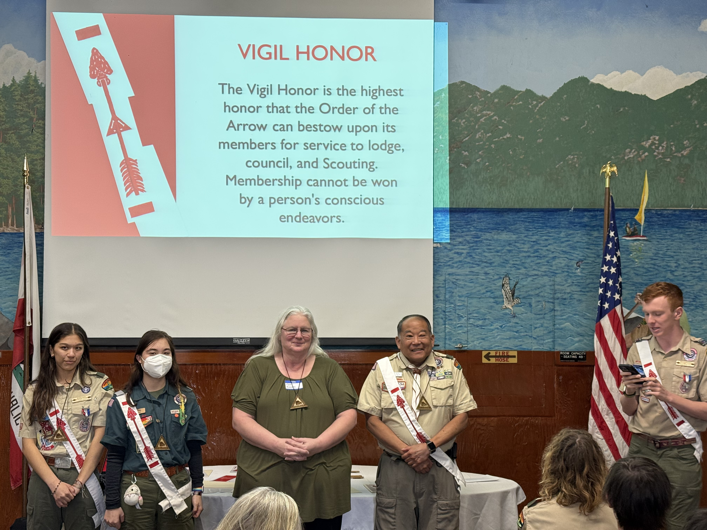
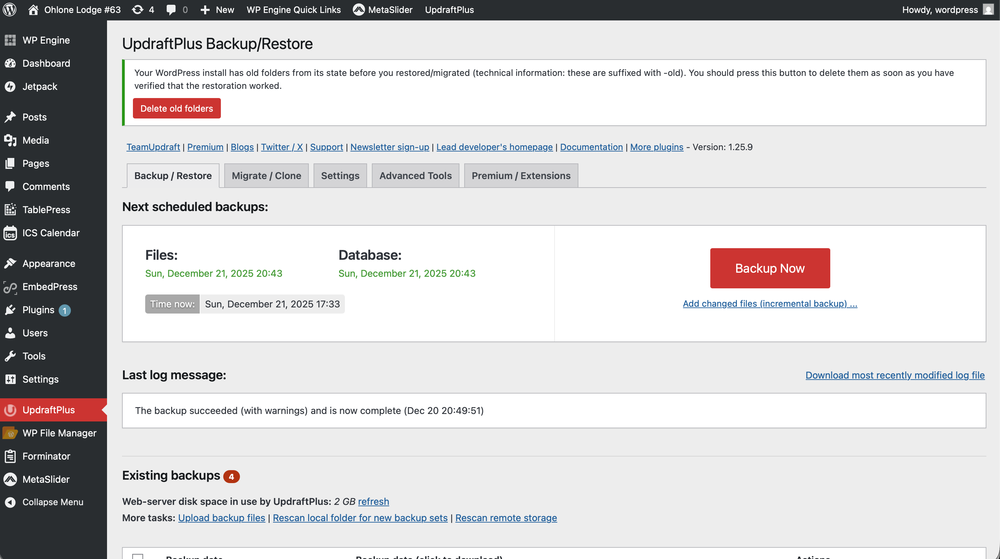

Leadership, engineering, and problem solving at scale.

Leading a 50 person recognition event
Leader
I lead people and operations to success. As an Eagle Scout and Order of the Arrow leader, I’ve directed
multi-unit organizations, rebuilt communications systems, and coordinated large, complex events. I combine
hands-on execution with strategic planning — whether that’s redesigning a lodge website and social presence,
managing 150-person camping trips, or organizing regional conferences. I deliver reliable outcomes and keep
people safe and productive.
Events led: 4Max participants: 150Volunteers: 20+
Simultaneously served as Senior Patrol Leader and Lodge Chief; expanded lodge membership and led
four multi-unit camping trips (50–150 participants) ensuring logistics, safety, and program quality.
Volunteers: 30+AppMachine
Coordinated a multi-lodge conference with over 250 participants. Delegated tasks and oversaw
committee members during planning and execution. Developed an event app using AppMachine.
Managed 30 Lifeguards2x Employee of the Month
Managed 20 lifeguards and pool chemical operations; trained 12 new lifeguards and led shift
coordination for 100+ daily patrons — demonstrates operational safety, personnel management, and
compliance under pressure.
Volunteers: 30+AppMachine
Led troop leadership and streamlined weekly operations; redesigned weekly meetings into a short,
high-impact follow-up session, improving volunteer efficiency and engagement. Recruited and mentored
patrol leaders; established consistent meeting leadership across the troop.
Managed 10 Direct Reports
Directed rank advancement program (2021) and managed 10 Troop Guides. Designed and produced
learning kits that improved retention and sped advancement.
Rebuilt lodge communications: redesigned social media and delivered a V1 website overhaul (ohlone63.org), improving clarity and member engagement.
Maintained regular member communications and documentation.
These experiences translate directly to IT and cybersecurity: event logistics mirror change management,
volunteer coordination reflects stakeholder communication, and safety protocols align with incident response
and compliance.
Engineer
I engineer reliable systems with a focus on security and maintainability. My experience spans IT
infrastructure, networking, web platforms, and software development — from deploying secure networks and
migrating production services to building software and hardware solutions that solve real problems.
Google WorkspaceCloudflare50+ users
Designed and executed migrations of production email and web infrastructure, focusing on uptime,
cost reduction, and long-term maintainability. Implemented backup and CDN strategies to improve
resilience and performance.
UbiquitiVLANsNetwork Mapping
Designed and deployed a segmented network using VLANs and UniFi hardware to improve reliability
and security. Created network diagrams and documentation to support troubleshooting and future
expansion.
Developed web and software projects emphasizing clarity, usability, and maintainable structure.
Built a computer vision–assisted device using embedded hardware and AI tooling to improve real-world
accessibility.
Configured and built PC. Repasted GPU to improve performance and reliability
I approach engineering with a security-first, reliability-focused mindset, designing systems that are
maintainable, well-documented, and resilient under real-world conditions.
Hardware-assisted vision project

Recovering from a production WordPress failure using backups
Problem Solver
Clear communication and long-term thinking guide my approach to problem solving. I focus on building solutions
that are reliable, well-documented, and designed to prevent recurrence rather than temporary fixes.
Attempted performance optimization prior to a hosting migration by evaluating and testing
software-level optimizations to reduce unnecessary infrastructure changes.
Diagnosed system crashes by running benchmarks and monitoring thermal metrics, identifying GPU
overheating as the root cause.
Responded to a rapid pool temperature drop by isolating boiler error conditions and coordinating
with management to restore safe operation.
Implemented frequent backups during website redevelopment, creating recovery points after major
edits or plugin changes to minimize downtime and prevent catastrophic data loss.
Chose WordPress over a fully custom codebase to ensure long-term maintainability for future
leaders with varying technical experience.
Produced clear documentation for plugins and workflows and trained an adult leader to ensure
continuity, knowledge transfer, and consistent site management.
“Reliable systems are built by people who plan for failure.”
Communication and forethought highlight my endeavors. When designing any system ensuring that the system is
not
just a temporary fix but a lasting process that can be relied on is the front of my thought.
My Projects
Selected real-world engineering projects demonstrating system design, problem solving, and hands-on
implementation. Each project includes technical details and, where applicable, source code.
Project Title: Network Infrastructure Upgrade Problem: Persistent wireless failures impacting daily operations Approach: Diagnosed root causes, redesigned network topology, and deployed a Ubiquiti-based
solution
with proper documentation Outcome: Restored stable connectivity and improved reliability for an active production
environment
Relevance: Network engineering, infrastructure troubleshooting, documentation, reliability
Project Title: AI Vision Assistance Problem: Need for assistive technology to support visually impaired users Approach: Collaborated on hardware design, system integration, and testing of an AI-based
vision
system Outcome: Delivered a functional prototype demonstrating hardware–software integration and
system
validation Relevance: Embedded systems, system integration, testing, teamwork View project →
Project Title: Personal Portfolio Site Problem: Need for a centralized platform to document and present technical projects Approach: Designed and built a responsive website from scratch using HTML, CSS, and JavaScript
Outcome: Deployed a maintainable site showcasing hands-on engineering work Relevance: Technical documentation, deployment, version control View project →
Project Title: Lodge WordPress Site (Production) Problem: Organization needed a reliable site manageable by non-technical users Approach: Built and customized a WordPress site with a focus on reliability and ease of updates
Outcome: Supported an active user base with a stable, maintainable platform Relevance: Production systems, user-focused design, reliability View project →
Project Title: Scottsdale Technology Management Problem: Theoretical business required a clear and maintainable online presence Approach: Developed and deployed a professional website emphasizing usability and long-term
maintainability Outcome: Delivered a production ready system meeting design criteria Relevance: Usability, maintainability
View project →
Interested in working together?
I’m currently seeking IT or security-focused internship opportunities where I can contribute, learn, and take on
real responsibility. If my background aligns with your team, I’d welcome the opportunity to connect.